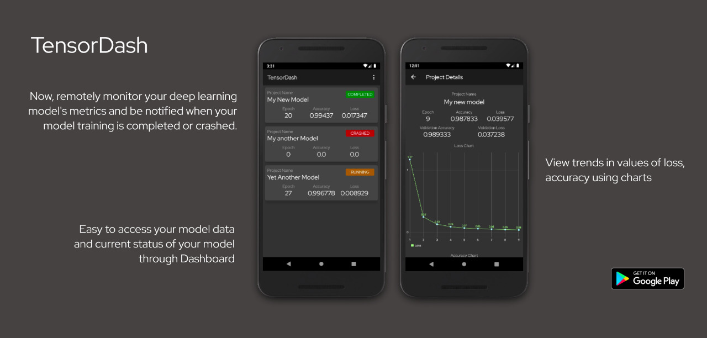

TensorDash

TensorDash is an application that lets you remotely monitor your deep learning model's metrics and notifies you when your model training is completed or crashed.
Why Tensordash?
- Watch your model train in real-time
- Remotely get details on the training and validation metrics
- Get notified when your model has completed trainng or when it has crashed.
- Get detailed graphs on your model’s metrics.
Installation
Installing the Python Package
Installing the Python Package
There are two ways to install tensordash:
- Install tensordash from PyPI (recommended):
Note: These installation steps assume that you are on a Linux or Mac environment.
If you are on Windows, you will need to remove sudo to run the commands below.
sudo pip install tensor-dash
If you are using a virtualenv, you may want to avoid using sudo:
pip install tensor-dash
- Alternatively: install tensordash from the GitHub source:
First, clone TensorDash using git:
git clone https://github.com/CleanPegasus/TensorDash.git
Then, cd to the TensorDash folder and run the install command:
cd TensorDash
sudo python setup.py install
Installing the Android App
Install the android app from the play store.